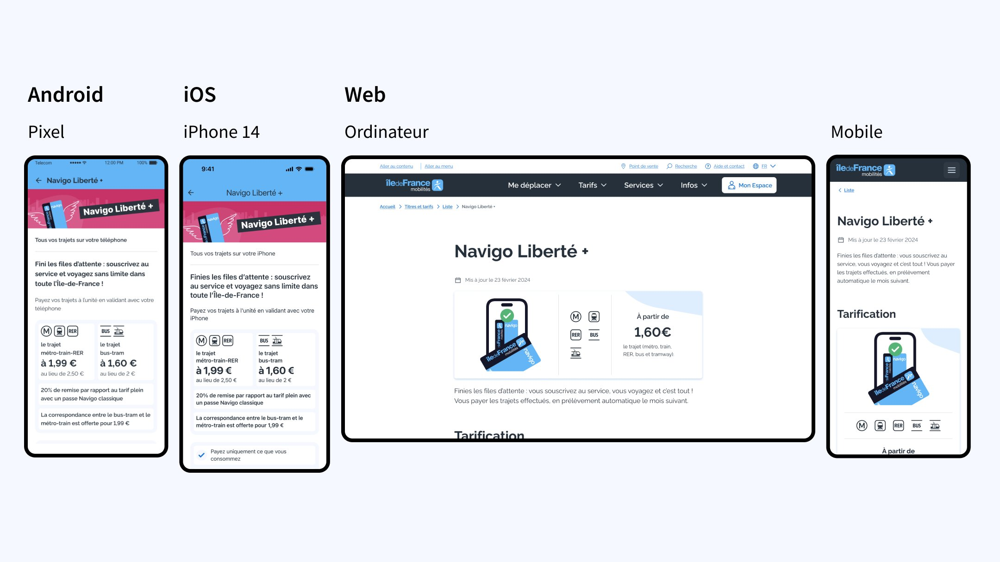
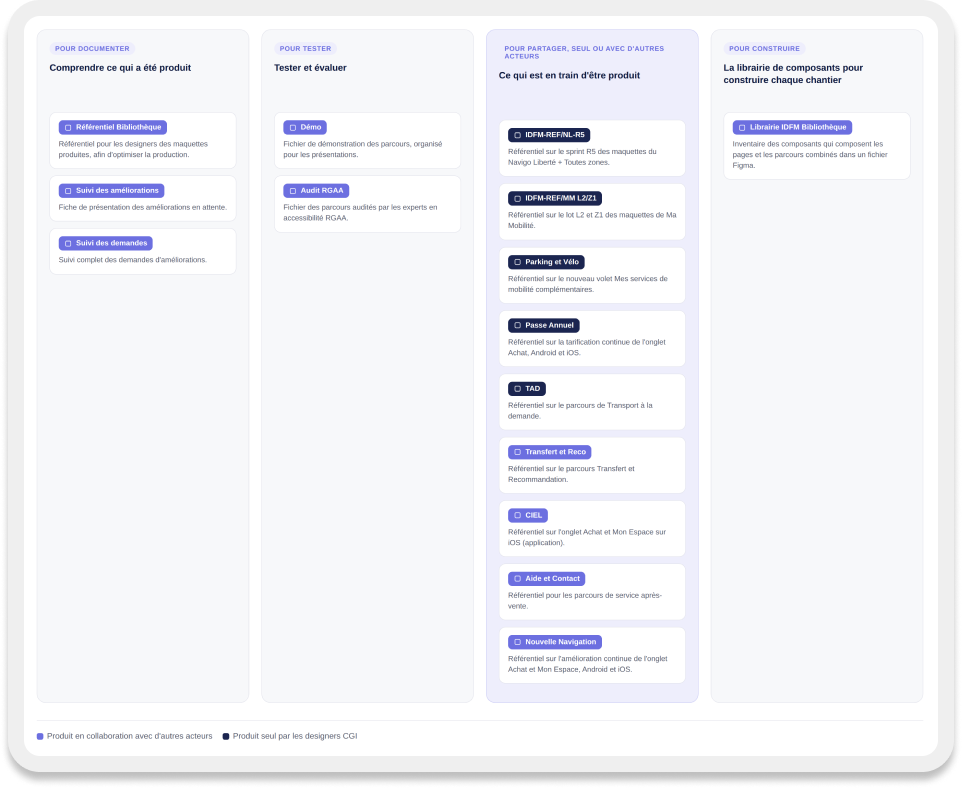

Piloter 12 chantiers de conception en parallèle et construire un design system multiplateforme partagé par 3 équipes design et 3 équipes de développement.
Billettique
Design system
Multiplateforme
Client
Île-de-France Mobilités
Rôle
Designer UX/UI
Période
Sept. 2023 – mai 2025
Outils
Figma
Équipe · Programme de modernisation de la billettique, avec la Direction du Numérique et les entreprises PwC, CGI, MC2i, Ingé-Stif, Monetech, Apple et Google
En bref
Le problème, ma décision, l'effet.
Problème
12 fonctionnalités interdépendantes conçues sans charte ni design system, sur des fichiers séparés, livrées en PNG.
Décision
Un design system relié de bout en bout, des fondamentaux aux modèles de page, et une nouvelle organisation des fichiers.
Effet
La conception passe de 80 % à 20 % du temps, et un design system commun à tous les produits IDFM est lancé.
Contexte & enjeu
Des acteurs indépendants, avant l'arrivée d'une équipe design.
Designer sur le programme de modernisation de la billettique (PMB), je suis intervenu sur la conception des parcours de 12 fonctionnalités interdépendantes, avec différentes équipes travaillant chacune sur leurs propres fichiers, initiés depuis 2019.
Côté IDFM, le projet a été lancé avec plusieurs acteurs indépendants, avant l'arrivée d'une équipe design. Les chefs de projet et les parties prenantes avaient commencé à concevoir les maquettes sans s'appuyer sur la charte graphique IDFM, inexistante à l'époque, ni sur les fondements de chaque environnement technologique.
Périmètre — Android · iOS · Web · 7 fonctionnalités
Titre de transport
Navigo Liberté + — nouveau titre de transport
Service
Navigo Annuel sur smartphone — nouveau service
Achat
L'achat d'un titre dématérialisé
Après-vente
Le service après-vente
Compte
L'espace personnel
La création et la gestion d'un compte
Mobilités
Les services de mobilités alternatives

Exemple · Navigo Liberté +
Un même parcours décliné sur Android, iOS et le web, en vue ordinateur et en vue mobile.
Constat — trois faits à mon arrivée
01
Un produit non aligné avec les maquettes
02
Aucun design system existant
03
Une conception inadaptée au développement
Problèmes identifiés
P1 · PRODUCTION
Une production non alignée avec les maquettes
Les maquettes ont été conçues sans tenir compte des spécifications fonctionnelles de chaque environnement technologique, ni de la charte digitale d'IDFM.
P2 · FICHIERS
Aucune organisation dans les fichiers
Le temps était consacré à retrouver une maquette et à comprendre l'enchaînement des écrans.
P3 · LIVRAISON
Une livraison difficile auprès des développeurs
Les maquettes étaient livrées au format PNG : les outils d'inspection des développeurs ne pouvaient pas fonctionner.
Démarche
Quatre enjeux, un système relié de bout en bout.
Contribuer à structurer un design system multiplateforme, destiné à plusieurs fonctionnalités de l'écosystème Île-de-France Mobilités.
Mutualiser l'existant
Identifier ce qui peut être partagé et réutilisé d'une fonctionnalité à l'autre.
Assurer la cohérence
Structurer les évolutions selon les spécificités du Web, d'Android et d'iOS.
Faciliter la transmission
Rendre les spécifications fonctionnelles compréhensibles par les équipes techniques.
Intégrer l'accessibilité
Prendre en compte le RGAA, le RAAM et les audits sur les fonctionnalités en cours de développement.
Architecture — avant, aujourd'hui
Avantdes éléments sans lien entre eux
01 FondamentauxDéconnectés des composants
02 AtomesComposants existants en production
03 MoléculesInexistant
04 PagesInexistant
Aujourd'huiun système relié de bout en bout
01 FondamentauxLa charte digitale IDFM traduite pour la conception de produit
02 AtomesLibrairies iOS et Android, refactorisation des composants en production
03 MoléculesLes fonctionnalités clés rassemblées et documentéesNouveau
04 PagesDes modèles de patrons de conception pour chaque environnementNouveau
Fondamentaux reconnectés aux atomes · deux niveaux créés : molécules et pages.
1
design system à gérer
63
composants atomes
75
composants molécules
180
composants pages
Design tokens · couleurs, responsive et mockups.
Décisions clés
Quatre décisions pour passer de la maquette au système.
Chaque décision répond à un constat précis et se traduit par un effet observable.
D1
Relier les fondations aux composants
Constat
Aucun design system, et une charte digitale IDFM inexistante au lancement du projet.
Décision
Traduire la charte en fondamentaux, créer les librairies iOS et Android, refactoriser les composants en production et construire les niveaux molécules et pages.
Effet
+2 niveauxun système relié de bout en bout, des fondamentaux aux modèles de page.
D2
Réorganiser le dossier de fichiers
Constat
Aucune organisation : le temps passait à retrouver une maquette.
Décision
Une nouvelle organisation du dossier, autour de fichiers clés pour documenter, tester, partager et construire.
Effet
Moins de fichiersl'effort de conception est synchronisé sur toutes les fonctionnalités à livrer.
D3
Livrer aux développeurs un format exploitable
Constat
Des maquettes livrées en PNG : les outils d'inspection ne fonctionnaient pas.
Décision
Améliorer les livrables et les informations transmises pour une implémentation fidèle, avec des composants analysés selon leurs états et leurs variantes.
Effet
0 → 30 %du temps consacré à la livraison.
D4
Faire adopter les méthodes, par la démonstration
Constat
Des profils de conception hétérogènes, répartis sur plusieurs équipes.
Décision
Un enseignement adapté à chacun, et des démonstrations et prototypes interactifs pour le management, avec une écoute active des besoins.
Effet
Projet transverseun design system commun à tous les produits de la marque IDFM est lancé.

Organisation · Dossier Billettique IDFM
Des fichiers clés pour documenter, tester, partager et construire ont permis de synchroniser l'effort de conception sur toutes les fonctionnalités à livrer, et de réduire le nombre de fichiers à gérer.
Le travail de fond derrière ces décisions
Fondations & tokens
Explication de l'organisation des fondations visuelles
Démocratisation de la charte digitale du client auprès des équipes
Bibliothèques & handoff
Analyse de la logique, des états et des variantes des composants
Livrables et informations transmises améliorés pour les développeurs
Accessibilité
Prise en compte du RGAA, du RAAM et des audits d'accessibilité sur les fonctionnalités en cours de développement
Réalisations
Du parcours au composant documenté.
Un aperçu des livrables : pages produit, documentation des composants et cartographie des parcours.
Page de présentation · Navigo Liberté + Mobile et ordinateurDocumentation d'un composant · Champ de saisie Ordinateur, iOS, AndroidCartographie des parcours Avant / Aujourd'hui